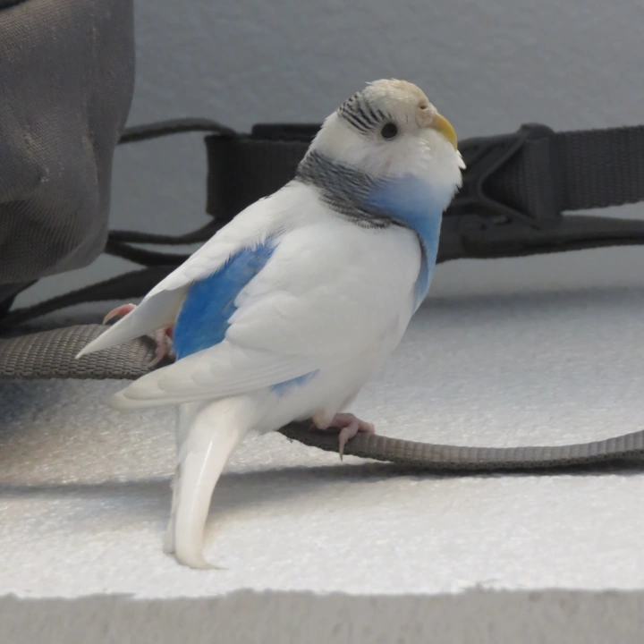

On November 18, 2021 my female parakeet died prematurely. I could have prevented it. Here is how you could prevent yours from dying. I believe my bird died from Pasty Butt syndrome. One day I looked at my parakeet's butt, and there was a huge lump of poop on her butt. I tried to remove it, but it was stuck on there like cement. And I failed to remove it. So the next day, she died. I did research online, and that's when I realized my parakeet died from Pasty Butt syndrome. So please if you have a bird or chicken. Always check her butt hole. Sticky poop hardens like cement on their butt and it prevents them from pooping. So they die of constipation.
About one month before my parakeet died, I saw there was poop stuck on her butt. Twice I cleaned it off. Several days later, I saw her butt hole was bald. My theory is she was plucking her feathers out trying to clean her butt hole. I did not know she could die from poop stuck on her butt. So I stopped paying attention to her butt. She started acting very weird. She stopped flying. She would only walk and sleep on the ground. And when she was on the ground, I was unable to see her butt hole. But she seemed so happy and relaxed. It turns out she was dying. But she was not screaming nor crying. That's why I did not believe she was dying. I know my bird had an underlying issue which caused her to have sticky poops. But I also know she would still be alive today if I had known to clean her butt. A guy on youtube says if you wet the poop, it's easier to remove it. Please don't let my bird die in vain. If you know someone with a bird, tell them about Pasty Butt syndrome.
This is the only photo I have of her, captured on January 8, 2019. She was my friend for 6 years. Around that time, I wrote this poem about her. Here it goes.
"This is my Liddo Birdish. Every morning she wakes up very early to fly out of her mansion (cage). She perches herself in front of our window and chirps, chirps, chirps. She is very smart. She has Tetrachromacy which means she can see 100 million colors in the world! That's 100 times more colors than you. She chirps about 1 hour every day. Her ardous singing voice has attracted many sparrow birds outside our window. They arrive here to serenade her as well. I always feel sorry to those birds who are homeless in comparison to my Liddo Birdish. My Liddo Birdish is a Liddo Princess compared to they. My Liddo Birdish lives in a beautiful palace called my house, she sleeps in a warm cage I cover with blankets, she gets her food in a bowl and water fortifed with vitamins and minerals. Those homeless sparrows drink water from the sides of roads. I wonder where they eat, and where they sleep at night when it's cold."